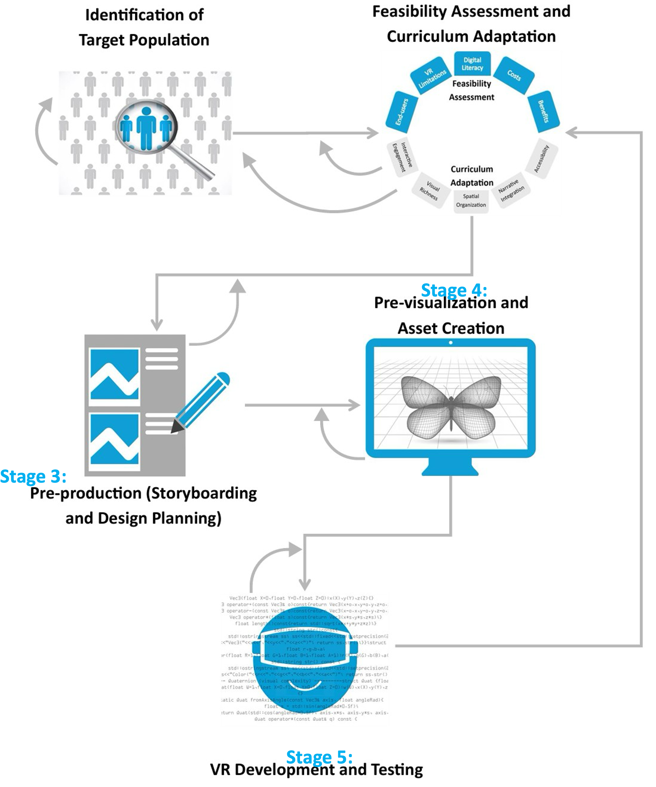
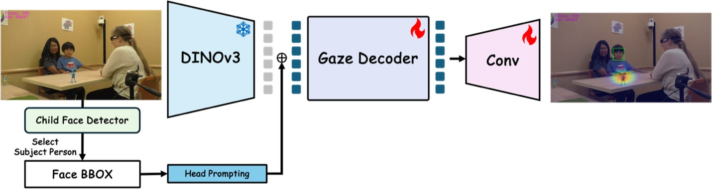
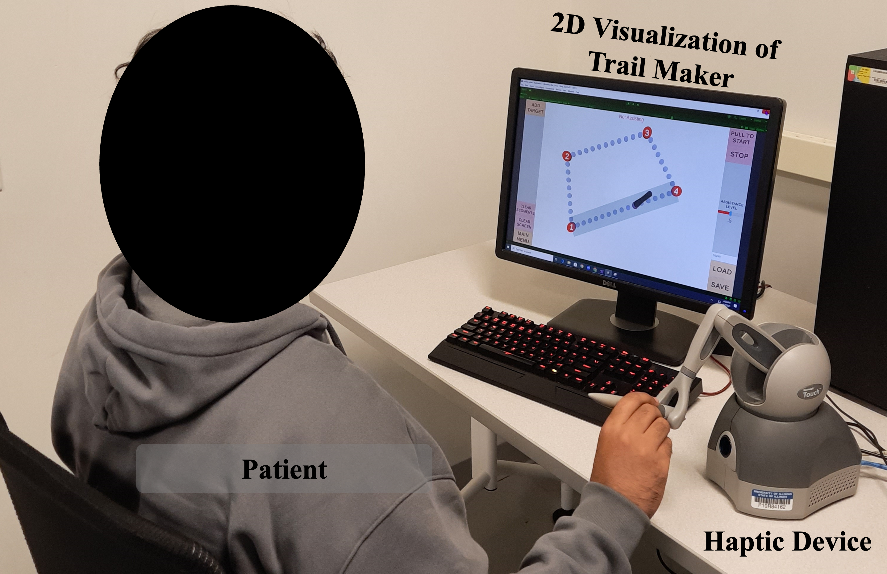
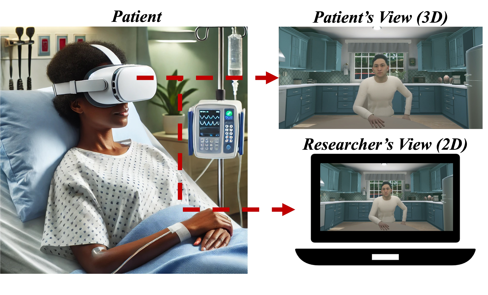
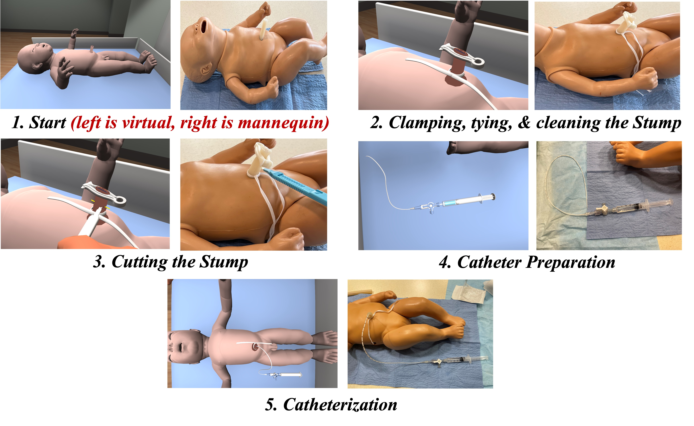

Harris Nisar
PhD Candidate, Industrial Engineering · UIUC
Data Scientist · John Deere
I am a PhD Candidate in Industrial & Enterprise Systems Engineering at the University of Illinois Urbana-Champaign (UIUC) where I am advised by Professor Prof. Dušan M. Stipanović. My research focuses on developing artificial intelligence (computer vision/machine learning)and simulation-based (haptics/VR/AR) tools for patient interventions, human behavior modeling and training with applications in healthcare and agriculture. Broadly speaking, I am interested in how technologies can be used to improve outcomes in complex, high-stakes domains.
News
Experience

- Recipient of ISE William A. Chittenden II Graduate Student Fellowship which fully covers my research appointment for one year (AY 2025-26).
- Researching the learning dynamics of recurrent neural networks.
- Developing a robotic platform for stroke rehabilitation in collaboration with occupational therapists at OSF St. Francis Hospital in Peoria, IL.
- Using the platform for the collection of patient data and training machine learning models to differentiate between healthy and patient subjects and to forecast patient movement to provide assistance through the robot.
- Taking technical courses in topics including machine learning, computer vision, and control theory.
- Leading the technical feasibility of predicting weed pressure from remote sensing data through deep learning to support John Deere’s precision weed sprayers (See & Spray).
- Building PySpark pipelines combining times-series of satellite and equipment data from 100M+ acres, producing clean, leak-free training datasets (less than 2% duplicates, less than 5-hour runtime).
- Enabling rapid training of deep learning models on large datasets (>1 billion rows) of remote sensing time-series and machine data using distributed training pipelines, Hydra configuration files and scripts to launch training runs via the Databricks Jobs API.
- Presented model experimentation results to 150+ attendees at JDTechCon, John Deere’s premier internal technical conference.
- Uncovered ~10% savings potential by fine-tuning See & Spray machine settings through the analysis of 100M+ acres of equipment data with PySpark and Pandas.
- Determined optimal satellite provider for weed detection through analysis of 100M+ acres of equipment and imagery timeseries data (0.15 -> 0.33 correlation improvement over 40 days).
- Created written and video documentation demonstrating how to use Databricks with VS Code, shared with 50+ data scientists and engineers.
- Designed a new algorithm to generate realistic timeseries data (eye tracking) conditioned on natural images using diffusion and cross attention, resulting in DiffEye which was accepted to NeurIPS 2025.
- Lead data annotation efforts with a team of 9 workers, using Python-based open-source tools to enhance machine learning models for behavioral data analysis on over 200,000 frames.
- Developed data pipelines using Python (Pandas, NumPy, Matplotlib) to analyze video datasets, detect annotation outliers, and automate visualization pipelines, reducing processing time by 50%.
- Implemented MLOps frameworks to easily launch and track experiments using tools like TensorBoard and Weights & Biases, increasing number of experiments launched from 2 a week to 1 a day.
- Managed GPU computing resources of 2 high performing nodes with 8 GPUs in each for large-scale model training. Utilized these resources for distributed training, increasing experiment speed by 2x.
- Facilitated IRB agreements to receive sensitive video of children performing clinical exams from 3 collaborators. Developing Data Use Agreements and pipelines to efficiently transfer the data (over 5 TB).
- Developed 10 virtual and augmented reality simulations for education to enhance training effectiveness.
- Led multi-disciplinary teams of engineers, clinicians, and artists, during full project lifecycle from ideation to deployment.
- Conducted statistical analysis and applied time-series modeling techniques to enhance simulations, creating a data-driven feedback loop that improved user engagement metrics by over 50% during training sessions.
- Managed over $400K in funding, producing 10+ publications and presentations on simulation-based learning.
- Developed a Unity-based mobile application for patient education (About Me 3D, formerly Rube-E), integrating Firebase for backend storage and a React.js-based content management system to enable real-time content updates.
- Designed and built an internal web platform using HTML, CSS, and JavaScript to document simulation development workflows, standardizing system creation and delivery. Presented website to leadership receiving positive feedback.
- Managed and mentored over 30 summer interns, overseeing project logistics, providing technical guidance, and fostering professional development.
Publications & Projects

We propose a methodological framework that provides a practical roadmap for developing and optimizing VR-based behavioral health interventions.

Our approach demonstrates that off-the-shelf vision foundation models can be simply converted into effective predictors of children’s gaze targets during naturalistic social interactions. I led the data annotation efforts for this work.

We propose DiffEye, a diffusion-based generative model for creating realistic, raw eye-tracking trajectories conditioned on natural images, which outperforms existing methods on scanpath generation tasks.

We propose a robotic platform designed for rehabilitation in neurological conditions where patients complete trajectories with a robotic device. We used this platform to collect data from 10 stroke patients and 11 healthy subjects and found signficant differences between these populations when using our platform and trained deep learning models to classify these populations and to forecast their movements.

We developed a customized virtual reality (VR) software for people with lung cancer and evaluated its safety, acceptability, and preliminary efficacy, focusing on its potential to enhance mental health in patient care.

We developed a VR simulator for UVC placement, based on a participatory design approach to gather clinical requirements and iteratively incorporate clinical feedback. Experts (n=14) reported that the VR simulator provided a safe environment to make mistakes and the majority recommended this simulator to trainees. In a seperate study about the transfer validity of our simulator, we also found comparable training levels when comparing our VR simulator to traditional video based methods.
Presented at IEEE Virtual Reality, Osaka, Japan, March 25–27, 2019. Evaluated the effectiveness of an interactive mixed reality application for teaching sepsis prevention.
Validation study for a VR-based food safety training module, assessing fidelity and content coverage for educational effectiveness.

A suite of VR training applications built in Unity3D for the Oculus Quest 2, covering: Joviality (psychotherapy for terminal illness), Neonatal UVC training, ECMO procedure teaching, Spay VR (veterinary surgery), Brain VR (neuroanatomy), and Road to Birth (obstetrics). All projects involve end-to-end development from SME consultation to deployment.
Education